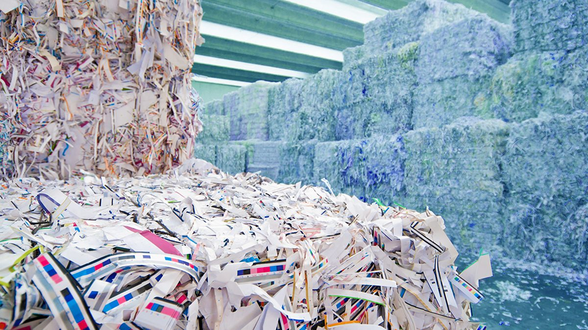
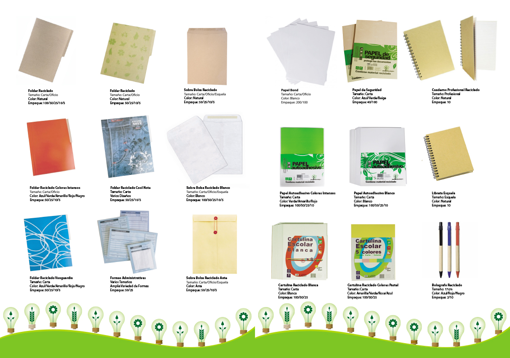

¿Por qué reciclar papel y cartón?
El reciclaje de papel y cartón ayuda a reducir la tala de árboles, ahorrar agua y energía, y
minimizar la cantidad de residuos que llegan a los vertederos.

Pasos para preparar el papel y cartón antes de reciclar
- Elimina grapas y cintas adhesivas: Separa cualquier elemento que no sea papel.
- Evita el papel sucio: No mezcles papel con restos de comida, grasa o líquidos.
- Clasifica los materiales: Separa el cartón del papel blanco o de otros tipos.
- Aplana las cajas: Esto ahorra espacio y facilita su transporte.
Tipos de papel y cartón reciclable
Algunos de los materiales que pueden reciclarse son:
- Papel de oficina: Documentos, hojas impresas, borradores.
- Cartón corrugado: Cajas de embalaje y transporte.
- Papel periódico: Diarios, revistas y catálogos.
- Papel kraft: Bolsas de papel y empaques resistentes.

¿Dónde llevar el papel y cartón?
Puedes llevar tu papel y cartón a cualquiera de nuestros Centros
de Recolección. Contamos con puntos específicos para su correcta disposición.
Beneficios de reciclar papel y cartón
- Reducción de la tala de árboles y conservación de los bosques.
- Ahorro de agua y energía en la producción de papel nuevo.
- Disminución de residuos sólidos en los vertederos.
- Menor emisión de gases de efecto invernadero.